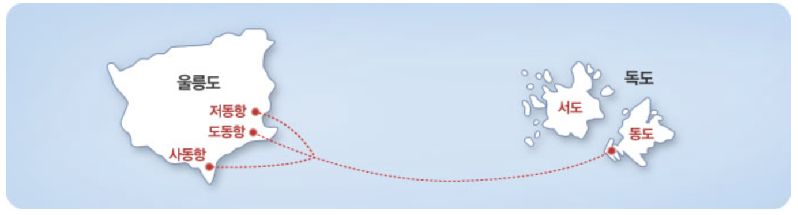

주민과 생활
주민
• 약 25명 거주
故 최종덕씨가 1965년 3월부터 최초 거주한 이래,
현재 婦김신열씨(夫김성도씨 2018년10월 별세), 독도경비대원 20명, 등대관리원 3명, 울릉군청 독도관리사무소 직원 2명 등 거주 중
(2024년 4월 기준)
입도 관련
• 2005년 동도에 대한 입도 신고제 도입 이후 현재까지 약 320만명 방문
• 서도는 울릉군을 통해 허가를 받은 후 입도 가능
입도 절차
여객선 정보
| 선사 | 연락처 | 선명 | 소요시간(편도) | 승선인원(t) | 선착장 |
|---|---|---|---|---|---|
| (주)대저해운 | 1899-8114 | 엘도라도호 | 1시간 30분 | 414명 (668t) | 저동항 |
| (주)제이에이치페리 | 1644-9605 | 씨플라워호 | 1시간 30분 | 450명 (388t) | 사동항 |
| 전도산업(주) | 1577-8665 | 씨스타1호 | 1시간 30분 | 442명 (388t) | 평일 - 도동항 주말 - 사동항 |
| 씨스포빌 | 1577-8665 | 씨스타5호 | 1시간 30분 | 438명 (388t) | 저동항 |
| 씨스포빌 | 1577-8665 | 씨스타11호 | 1시간 30분 | 449명 (420t) | 저동항 |
유의 사항

• 독도는 울릉도를 거쳐야 오실 수 있습니다.
• 선박 운행시간, 요금, 선착장 등은 변동될 수 있으니 각 선사를 통하여 미리 확인바랍니다.
• 독도 입도는 기상 여건, 선박 사정에 따라 제한될 수 있으며, 독도 입도 시 동도 선착장에 한해 관람이 가능합니다.
• 관광 목적이 아닌 행사, 집회, 취재, 학술조사, 숙박, 체류 등의 특수목적의 경우 울릉군에 입도 신청을 하여 허가를 받은 후 가능합니다.
• 자세한 내용은 ‘독도입도종합안내사이트’를 참고바랍니다.